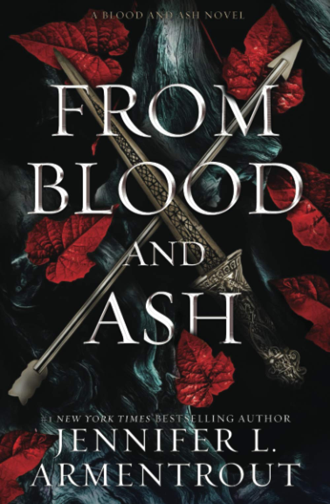

From Blood and Ash
Chosen from birth to usher in a new era, Poppy’s life has never been her own. The life of the Maiden is solitary. Never to be touched. Never to be looked upon. Never to be spoken to. Never to experience pleasure. Waiting for the day of her Ascension, she would rather be with the guards, fighting back the evil that took her family, than preparing to be found worthy by the gods. But the choice has never been hers. A Duty… The entire kingdom’s future rests on Poppy’s shoulders, something she’s not even quite sure she wants for herself. Because a Maiden has a heart. And a soul. And longing. And when Hawke, a golden-eyed guard honor bound to ensure her Ascension, enters her life, destiny and duty become tangled with desire and need. He incites her anger, makes her question everything she believes in, and tempts her with the forbidden. A Kingdom… Forsaken by the gods and feared by mortals, a fallen kingdom is rising once more, determined to take back what they believe is theirs through violence and vengeance. And as the shadow of those cursed draws closer, the line between what is forbidden and what is right becomes blurred. Poppy is not only on the verge of losing her heart and being found unworthy by the gods, but also her life when every blood-soaked thread that holds her world together begins to unravel.
About the author
Want this book?
You can buy it here.About Jennifer L. Armentrout
#1 New York Times and #1 International Bestselling author Jennifer L. Armentrout lives in Shepherdstown, West Virginia. All the rumors you’ve heard about her state aren’t true. When she’s not hard at work writing. she spends her time reading, watching really bad zombie movies, pretending to write, hanging out with her husband, her Border Jack Apollo, Border Collie Artemis, six judgemental alpacas, two rude goats, and five fluffy sheep. In early 2015, Jennifer was diagnosed with retinitis pigmentosa, a group of rare genetic disorders that involve a breakdown and death of cells in the retina, eventually resulting in loss of vision, among other complications. Due to this diagnosis, educating people on the varying degrees of blindness has become of passion of hers, right alongside writing, which she plans to do as long as she can.
jenniferlarmentrout.com
instagram.com/jennifer_l_armentrout